Using Discord on Windows NT 3.1
Do you happen to have an old Windows NT 3.1 machine lying around? Do you, for some strange reason, want to use a modern chat application, Discord, on this ancient operating system that almost nothing else runs on? Well, boy do I have the news for you!
Discord Messenger has been ported to Windows NT 3.1
Yes, that's right, Discord Messenger now runs on NT 3.1.
Well, almost. I don't have a release available right now. V1.08 will come out soon. For now there is V1.08rc1 which is designed to run on Windows 95 RTM and Windows NT 3.51.
But all of the code is out there so if you compile and hack everything together you should be able to compile Discord Messenger to run on NT 3.1.
How does this work?
There were several issues that prevented Windows NT 3.1 from running Discord Messenger and I will go over them all in a (roughly) chronological order.
First Steps
Windows NT 3.1's installation on VirtualBox was actually kinda smooth. I had to disable CPU acceleration,
but other than that, it's pretty fine. Networking was also not that hard, though the lack of DHCP did give
me some headaches. I had to set the gateway to 10.0.2.2 and the IP address to 10.0.2.15 (as far as I
can tell these are just what VirtualBox gives every VM guest). Also, I had to manually assign a DNS server,
and I chose 1.1.1.1 and then 8.8.8.8. Then it was go time - I could ping discord.com.
Trying to run Discord Messenger for the first time leads to an error that claims that "DiscordMessenger is not a valid Win32 application." Turns out that was due to the subsystem version. I had foolishly thought that version 0x0400 was the minimum that the Win32 API has ever had, but nope! NT 3.1 expects a subsystem version of 0x030A (3 10).
Luckily nothing spectacular had to be done - MinGW's ld has options for this, namely --major-subsystem-version
and all its variations. However, I had to bytepatch the MinGW DLLs to get those to work.
Then come the linking errors...
Missing APIs
Windows NT 3.1 is leagues behind in terms of API compatibility. A lot of things that 3.51 supports are just not supported on NT 3.1. You'd expect that, for a version that seems to only add 41 to the version number (the former's version number is actually 3.10), there wouldn't be so many changes, but you'd be wrong. Actually Windows NT 3.51 implements a large enough subset of Windows 95 / NT 4.0's API set that Discord Messenger mostly "just worked" (after of course porting it to use Winsock1.1 instead of Winsock2).
All kinds of things were missing. What really broke everything was that MSVCRT, a required dependency of MinGW's C runtime's, doesn't run by default on NT 3.1. It imports several functions that just don't exist in NT 3.1's Kernel32.dll. (Though I haven't bothered to try to find earlier versions of MSVCRT.dll. There is actually a CRTDLL.dll but I found that a lot of features were missing from it so I decided it was not worth trying to port MinGW to use CRTDLL.dll.)
I could fix the dependencies that Discord Messenger and OpenSSL were importing by just writing shims using
GetModuleHandleA and GetProcAddress. However, that proves to be far more difficult for MSVCRT. Still,
I began work on reducing the number of missing imports to zero, with the exception of MSVCRT.
Shims are necessary because I don't want to outright rewrite the program to use older APIs, instead, I want to simulate newer APIs using older APIs whenever possible.
MSVCRT
MSVCRT, or the Microsoft Visual C++ Runtime, is a DLL that MinGW uses to implement its own C runtime environment. (By the way, this is not the Visual C++ 2015 Runtime, which the MSVC builds of Discord Messenger want, it's way older.)
Unfortunately, as it turns out, the copy of MSVCRT that I extracted from Windows 95 has some missing
imports from kernel32. Missing imports that, as it turns out, are crucial in getting this project
to run on NT 3.1. All kinds of APIs were missing - environment variables (the APIs were different),
locale stuff, GetVersionExA and GetSystemTimeAsFileTime.
Some things I tried to solve this problem:
MSVCRT Recreation
At first, I wanted to try and recreate the MSVCRT from scratch. But that turns out to be a way bigger deal than you might think. You have to implement features such as thread local storage, thread support in the first place, atexit handlers, locale, formatting, math, etc. It'd take a long time, and would probably be better for something like an operating system project.
Kernel32 Forwarder
Since the only missing imports were from Kernel32.dll, I decided to write a DLL which replaces all of the functions that Kernel32 expects. Due to the way that import tables are structured in the PE format (only featuring the DLL's name to import from once), I had to make the new DLL give it every function that it could possibly requests. And I went to work.
Within just a few hours I dealt with all of the static (pre-runtime) link problems.
I named it "Kernec32.dll" simply because it's a single byte byte patch.
Crashes
While I had every pre-runtime dynamic linking issue fixed, during runtime this is a different story.
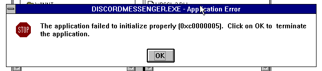
It turns out that the librarian itself is crashing while trying to link Kernec32, the name of my Kernel32 forwarder, to the rest of the DLLs.
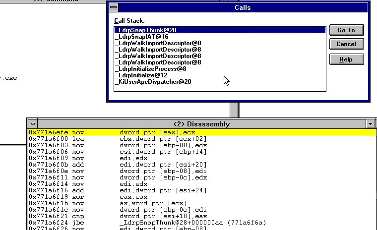
As such I scratched my head for a while thinking of all the possible issues until I realized.
The Kernec32.dll file was linking against Msvcrt.dll.
This was actually the cause of the crash! As it turns out, Windows NT 3.1 does not like DLLs that reference each other in a circle. Kernec32.dll was, for some reason, importing Msvcrt.dll, which in turn was importing Kernec32.dll.
Fixing that required me to define everything myself and use the -nostartfiles and -nodefaultlibs options
when linking Kernec32.dll.
Defining the missing functions
Until then Kernec32.dll merely functioned as a way to perform the responsibility of linking against functions
at run time using GetProcAddress. That was good enough to get this:
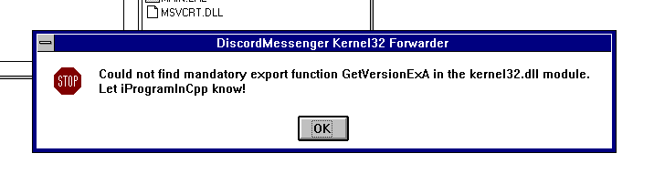
Yeah, so now I had to actually sit and implement the missing functions. This wasn't that hard - I already have the required experience so this was actually quite fine indeed.
The last roadblock was that I accidentally typed in jmp (_P_NameHere) in inline assembly (AT&T syntax) instead
of jmp *(_P_NameHere). And that's why I was left wondering for an hour or so, why it was jumping to and executing
from the jump table I created.
It Runs!
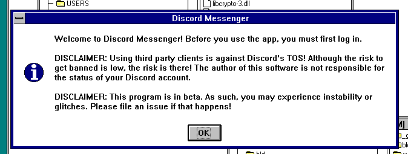
This was a glorious sight to behold. Indeed, everything was coming together! But then...
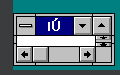
I decided to just bypass this by using a pre-existing configuration file that has the token already stored. But then the program crashes! What could it be?
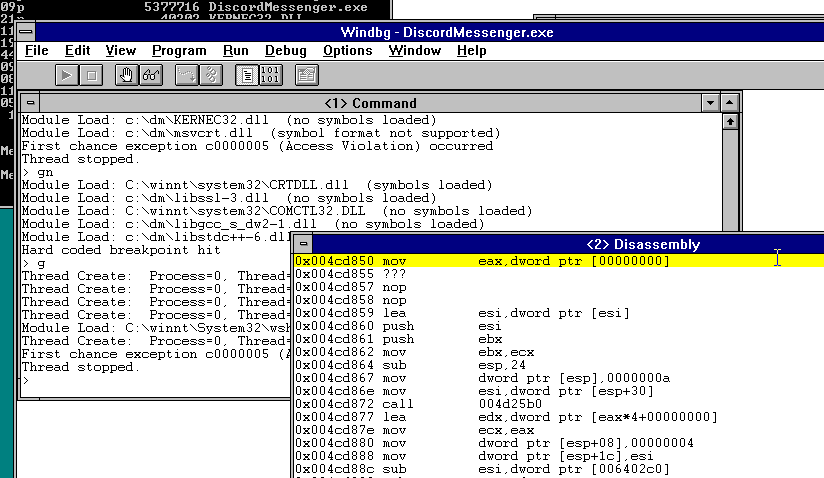 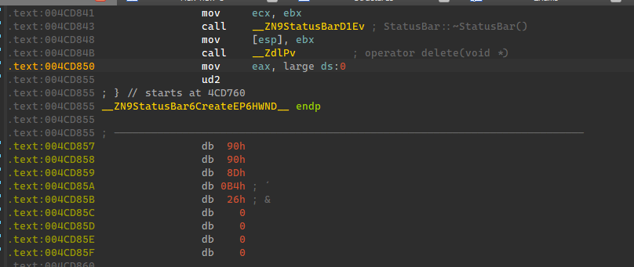
Turns out the status bar couldn't be created. But Windows NT 3.1 has status bars, doesn't it? Yeah, it does!
But it turns out they go by a different name. They aren't instantiated by creating a window with the class name of
msctls_statusbar32 (STATUSCLASSNAME). Instead, they are instantiated with the msctls_statusbar class name
by a helper function called CreateStatusWindow.
What's up with CreateStatusWindow?
Turns out that Windows NT 3.1's common controls DLL (comctl32.dll) does NOT export CreateStatusWindowA and
CreateStatusWindowW, as you might expect. It exports a single CreateStatusWindow which takes in ANSI parameters.
This is super strange because this isn't what you'd normally expect from a function that takes strings. Indeed, when
I tried to make DiscordMessenger use CreateStatusWindow, it was actually linking to CreateStatusWindowA which
NT 3.1 doesn't export. I had to add this feature to The MWAS - it tries
to link at runtime against CreateStatusWindowA, and if that fails, then the normal CreateStatusWindow.
The common controls collection is pathetic on NT 3.1
I don't use such words lightly but I'm not kidding. I can count the amount of common controls Windows NT 3.1 implements on one hand: status bars, tool bars, track bars, up-down controls and header bars. No list views, no tree views, no nothing. Discord Messenger uses list views and tree views, so what now?
I have no idea why the common controls library is scuffed like that, but I'm going to guess that that's just because Windows 3.1 itself had so few common controls, and they merely rushed to port the library over without giving too much care to ANSI/Unicode differences. But this is just my theory.
For testing I decided to just make the program proceed if it can't create the channel list and member list, intending to replace them later. After that, I saw the glorious sight:
It Runs! (For real this time)
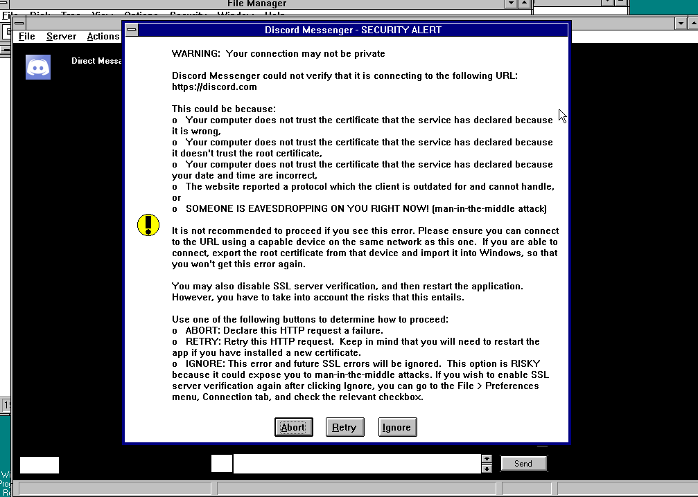 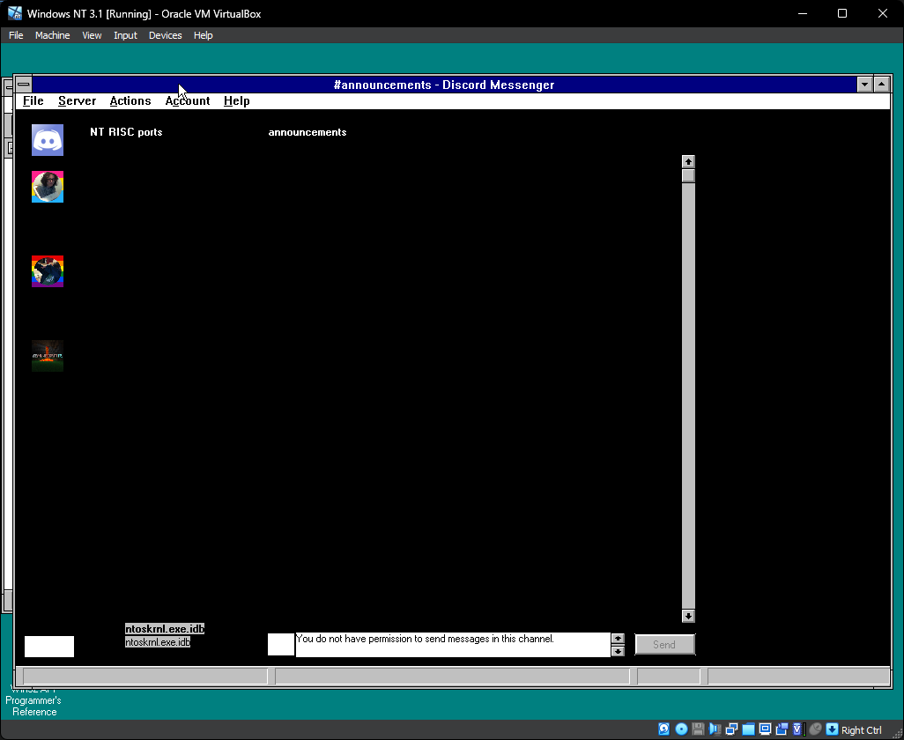
Due to me failing to implement GetSysColorBrush properly everything renders as black. Initially I wanted
certain colors to always return black and some always return white, but GetSysColor is still exported so
I decided to just create solid brushes from those colors.
Fixing that we get... this: 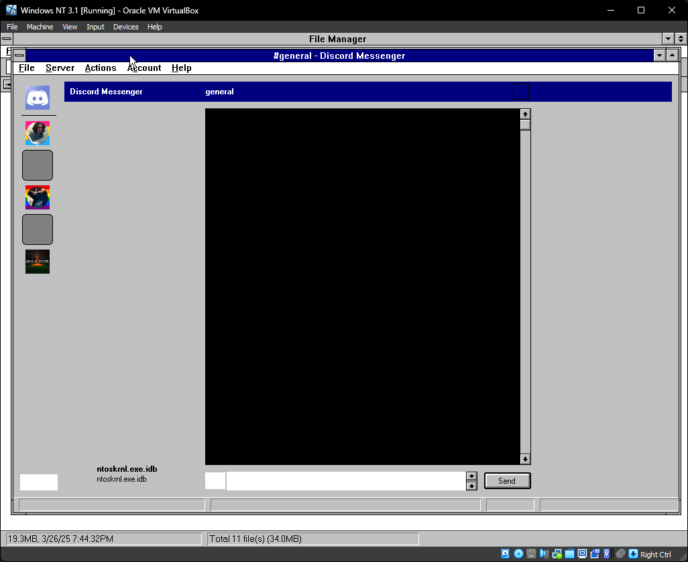
It's slightly better. The message list is still blank - will have to see what's up with that.
Also, here's an image that I took directly from within NT 3.1's VM. As it turns out this is quite broken. I don't know why. Maybe the clipboard functionality is bugged?! Maybe the video driver is screwed up?!
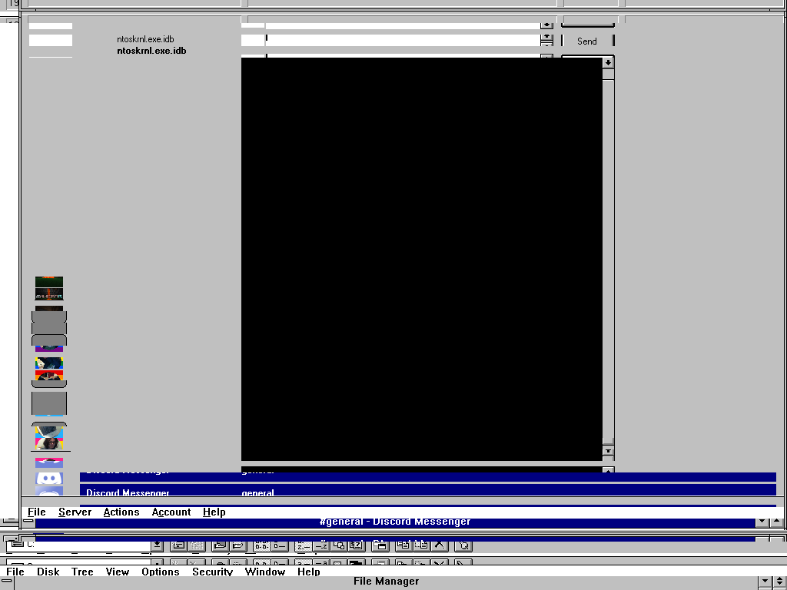
Replacements for missing common controls
Since the common controls library in NT 3.1 doesn't implement list views and tree views, I decided to reimplement the channel and member lists using a list box. This seems to work fine for the most part. Since list boxes are relatively limited compared to list and tree views (unless you owner draw them) I decided not to bother too much. Categories are delimited with dashes and are always open, and the members list functions more like an IRC "nick list" which only shows online users.
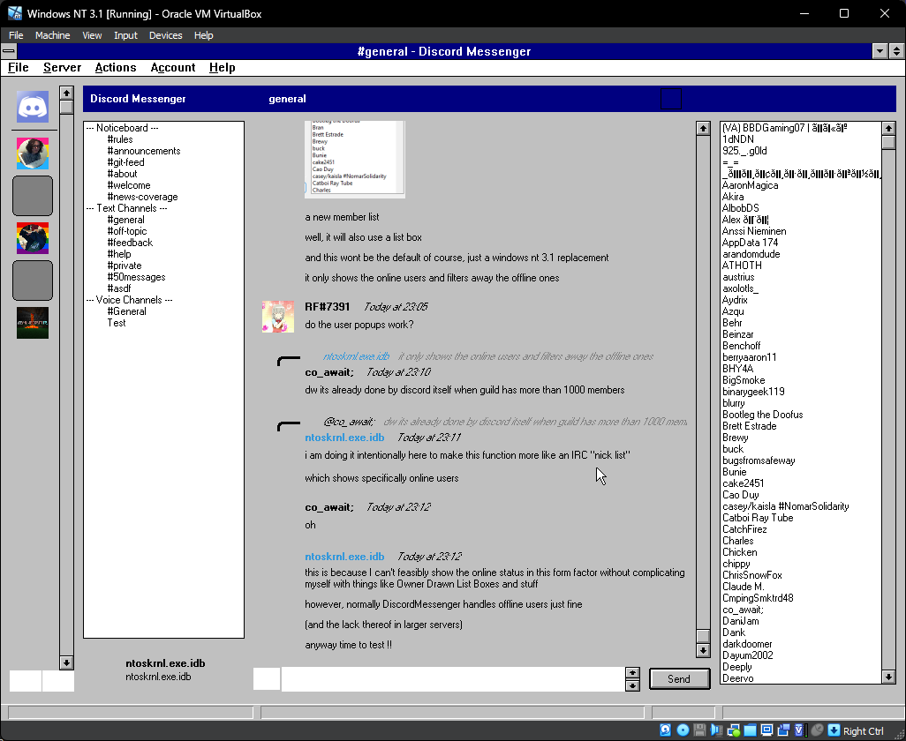
What about Win32s?
Win32s is an extremely limited subset of Win32 that runs on Windows 3.1. There are several reasons why Discord Messenger will most likely never run on Win32s:
Win32s does not support threads. Like, at all. And threading is, even though it may be counterintuitive, actually a big part of how Discord Messenger's networking backend works.
Win32s does not run the Microsoft Visual C++ Runtime which MinGW links against. MSVCRT specifically has checks to prevent running on Win32s. Therefore I would need to also track down some other kind of C++11 compliant compiler that supports Win32s. (Well, technically, MinGW can be made to do that, because you can remove the C runtime from the question, but at that point you'd need your own runtime, and ugh...)
I am also going to run against seemingly arbitrary limitations on Win32s given that it's implemented on top of the 16-bit kernel rather than being its own thing.
16-bit Windows is also incredibly limited and I do not conceive that Discord Messenger's codebase (even with all the network stuff stripped out and moved externally) will ever be compiled for 16-bit Windows.
The only way you could conceivably run Discord Messenger on Win32s is if you rewrote the entire thing. As such, I have no plans to support Win32s.
What's next?
There are still some major bugs, such as that what the guild lister shows doesn't match to what happens when you click it (some items seem to be skipped during the paint process), some images straight up do not load at all, most icons just don't appear, and more. I will be working to fix these issues but it will take time.
The bottom line is, it works, and I couldn't be happier. Despite the remaining bugs, this port marks a significant milestone in the history of Discord Messenger, and is a testament to what's possible with enough determination. While Windows NT 3.1 is outdated by today's standards, it is still very capable, but you have to give it some helping crutches.